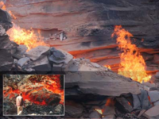
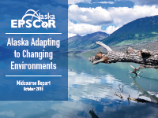
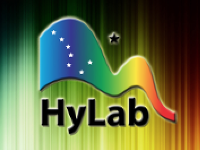
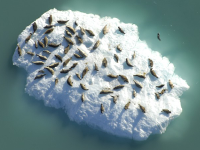
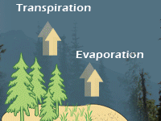

My research involves using field methods, remote sensing, and modeling for mapping Earth surface composition and change. Changes that are visible on the surface are a result of complex processes operating in the Earth system. Mapping and modeling helps understand the past, present and possible future state of the Earth's surface.
Many of my research projects are large and interdisciplinary in nature. The maps and information our team generates helps several end-users, including community members who need to adapt to changes, managers who are interested in resource extraction in an environmentally friendly manner, and policy-makers who need timely information for decision-making. Below are highlights and links to some of the major projects that I am leading or have actively participated in.
Coal and Peat Fires: In 2015, I completed co-editing a 4-volume book series on investigations of coal and peat fires around the world. This is the most comprehensive compilation of all aspects of coal and peat fires and a legacy contribution in this field. I started research on coal mine fires in 1992 for my doctoral studies and have been involved with it since then. Most of my work has been in India, China, and Alaska. The book project was an unfunded decade-long effort (2005-2015).
Alaska Adapting to Changing Environment (ACE): The NSF EPSCoR program and the State of Alaska have invested $24M in this 5-year long project to help improve the research infrastructure in the State. In the ACE project we conduct biological, physical and social research into the adaptive capacity of Alaskan communities: the mechanisms that enable communities to effectively respond to environmental and social changes.
Hyperspectral Imaging Laboratory (HyLab): The NSF MRI program, funded us to establish a new facility for acquiring and processing in-field and airborne hyperspectral data to support new basic and applied research in ecology and natural resouce exploration in Alaska. HyLab has completed equipment acquisition and comissioning. We have our data processing protocols set and tested. We are now providing operational support to researchers interested in using this technology.
Glacier-Ice Habitat for Harbor Seals: For this NPS funded project we assess the relationship between glacier-ice availability and harbor seal spatial distribution and abundance in John Hopkins Inlet, Alaska, using an 8-year time-series of digital imagery. Biology, glaciology, statistics, and remote sensing experts work together on this interdisciplinary project to investigate seasonal and annual trends in ice cover and characteristics for 2007-2014 period.
Evapotranspiration Mapping and Modeling: Evapotranspiration measures water loss to atmosphere through soil evaporation and plant transpiration, and is a major component of the Alaskan water cycle and climate dynamics. For this NASA EPSCoR funded project, we establsihed two instrumented field-sites, and generated ET products for parts of interior Alaska and Arctic Alaska. Field-stes continue to provide important calibration and validation data for remote senisng products.